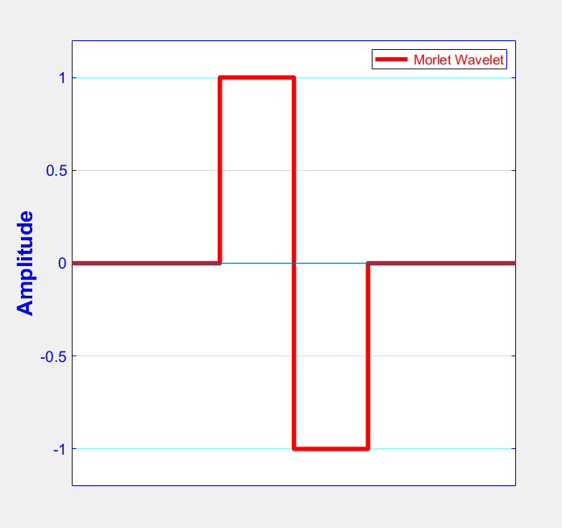
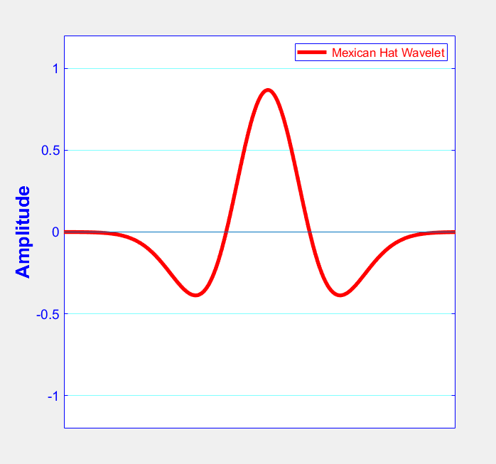
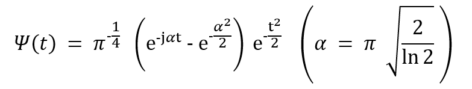
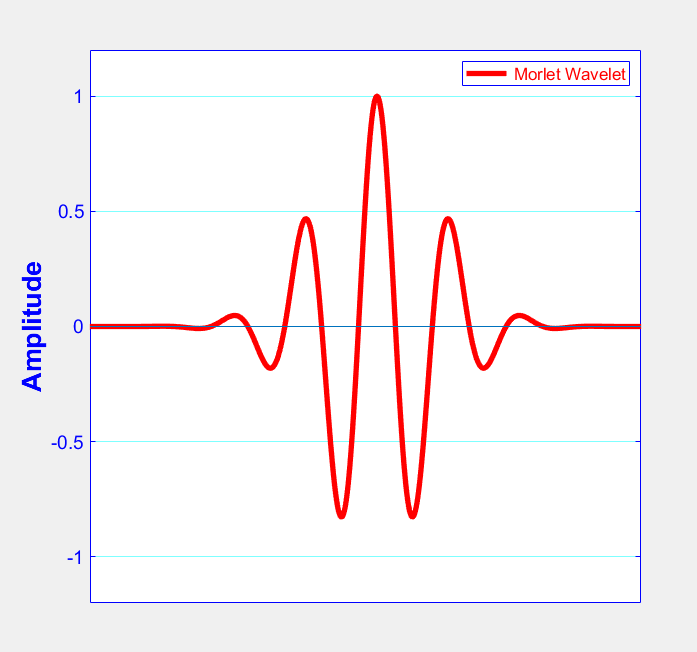
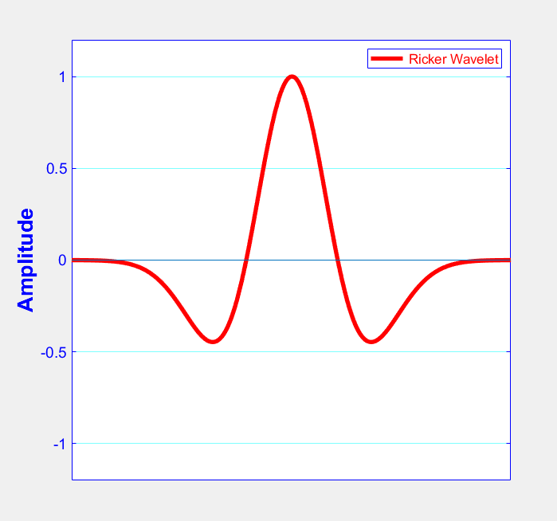

Wavelet analysis started in the mid-eighties with the study of seismic signals and expanded later to many other signal processing applications like analysis of medical signals (electrocardiograms) and signal compression (Stark 2015).
The following are some wavelet function examples in time domain:
(Stark 2005, p26)
(Stark 2005, p26)
(Stark 2005, p26)
 (Wang 2015, p26)
Hans-Georg Stark (2005). Wavelets and Signal Processing, An Application-Based Introduction. ©Springer-Verlag Berlin Heidelberg 2005.
Yanghua Wang (January 2015). The Ricker wavelet and the Lambert W function. Geophysical Journal International, Volume 200, Issue 1, January 2015, Pages 111–115, https://doi.org/10.1093/gji/ggu384 . Published: November 3rd, 2014.